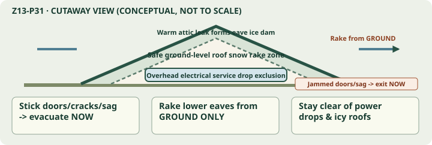

Z13-P31 · Home survival and utilities · New manuscript
Spot ice dams, heavy snow roof-load cues, and safe exterior clearing limits
Recognize dangerous structural snow-load and falling-ice hazards on northern roofs without risking fatal falls or electrocution.
When it applies · Heavy multi-storm Upper Midwest winters producing deep roof snowpack, rain-on-snow weight, and eaves ice dams.
Equipment · Long-handled roof snow rake used strictly from solid ground (never ladders/icy roofs) and structural/contractor contact.

Actions
- Watch for dangerous roof-overload warning signs after deep snow or rain-on-snow storms: doors or windows suddenly sticking/jamming, new drywall cracks, creaking/popping ceiling rafters, or visibly sagging roof ridges—evacuate the building immediately if structural distress appears.[U10, U17]
- Clear lower roof eaves from SOLID GROUND ONLY using a long-handled fiberglass/aluminum roof rake while staying completely clear of overhead electrical service drop wires and falling snow avalanches—NEVER climb onto an icy sloped roof or chop ice dams with axes/picks (which punctures shingles and causes fatal falls).[U10, K08]
- Treat chronic ice dams (caused by warm attic air melting snow that refreezes at cold eaves) with long-term attic air-sealing and insulation upgrades via qualified contractors rather than dangerous DIY roof climbing.[U10]
Failure recognition · Climbing an extension ladder onto an ice-glazed roof with a metal shovel near an energized overhead electrical service drop.[U10, D04]
Verify · Confirm any roof-rake work stays strictly on solid ground well clear of overhead power wires and falling snow paths.[U10]
Stop or change course · Sticking doors, cracking plaster, loud structural popping, or visible roof sag mandates immediate building evacuation and professional structural inspection.[U10, U17]
Evidence and editorial notes
- D04 · FEMA / Ready.gov · Thunderstorms and Lightning (current web edition)
- Section: Severe Thunderstorms, Straight-Line Winds, Hail, and Lightning · Conditions: Severe Thunderstorm Warnings, derechos, and electrical storms
Support: Move indoors to a substantial building immediately when thunder is heard or severe wind warnings issue; stay away from windows, corded appliances, and plumbing during lightning, and avoid downed limbs and energized downed lines after derechos.
Limitations: Straight-line derecho winds can rival tornado damage across hundreds of miles and cause multi-day regional power blackouts. · Conflicting evidence: None; integrates with E07 and E18.
Editorial note: Grounds severe-storm, hail, and straight-line wind response cards. · Specialist reviewer: Meteorology and utility safety
Primary source · checked 2026-11-24
Current assessment · A04-D04 (2026-11-25) · Bounded support confirmed from an alternate source (A04): The two relevant pages support separate thunder/lightning and high-wind conditions and energized line avoidance. The original tornado link did not verify this claim. Limits: Specialist review PENDING (Meteorology and utility safety); publication HOLD. All release decisions pending. - K08 · OSHA · Hand and Power Tools (OSHA 3080) (agency PDF)
- Section: Personal Protective Equipment and Work Area Control · Conditions: Cutting, splitting, striking and rigging operations
Support: Maintain stable footing, eye and hand protection appropriate to flying chips or snapped cordage, and clear bystanders outside the swing or snap-back zone.
Limitations: Field kits often lack shop PPE, requiring slower conservative technique and lower-energy methods. · Conflicting evidence: None; drives snap-back and work-circle exclusion zones in Z09.
Editorial note: Enforces conservative work circles and snap-back clearance. · Specialist reviewer: Tool safety and occupational safety
Primary source · checked 2026-11-24
Current assessment · A04-K08 (2026-11-25) · Open: support partial or missing (A04): Eye protection requirements are task-specific. Safe stance, glove choice and recoil envelope require each tool or rigging source. Limits: Specialist review PENDING (Tool safety and occupational safety); publication HOLD. All release decisions pending. - U10 · FEMA / Ready.gov · Winter Weather (current web edition)
- Section: Winter Household Resilience > Frozen Pipes, Ice Dams, and Heating Loss · Conditions: Sub-zero Upper Midwest winter outages and prolonged cold snaps
Support: Prevent burst pipes by insulating exposed lines, keeping cabinet doors open, shutting off and draining water lines per plumbing guidance if indoor temperatures drop toward freezing, and consolidating household occupants into one safe insulated interior room.
Limitations: Draining hydronic boilers or gas water heaters requires exact manufacturer/plumber steps to prevent equipment damage or gas leaks. · Conflicting evidence: None; regionalizes winter home defense for Minnesota conditions.
Editorial note: Anchors winter pipe protection, thermal-zone consolidation, and abandonment thresholds. · Specialist reviewer: Residential plumbing, HVAC, and cold-weather emergency management
Primary source · checked 2026-11-24 - U17 · FEMA / Ready.gov · Evacuation (current web edition)
- Section: Household Evacuation Thresholds When Utilities Fail · Conditions: Uninhabitable indoor temperatures, sewage backup, persistent CO alarm, or structural/utility hazard
Support: Establish clear pre-agreed exit triggers to relocate to a warming center, hotel, or relatives BEFORE indoor freezing, carbon monoxide alarms, medical-device battery exhaustion, or impassable blizzard roads trap occupants.
Limitations: Waiting until indoor pipes burst or batteries hit zero removes safe travel options. · Conflicting evidence: None; aligns with T13 and E14.
Editorial note: Defines objective household abandonment thresholds in Z13. · Specialist reviewer: Emergency management and cold-weather operations
Primary source · checked 2026-11-24
Source lineage · FEMA Ready.gov Winter Weather; new manuscript · Classification · New manuscript.